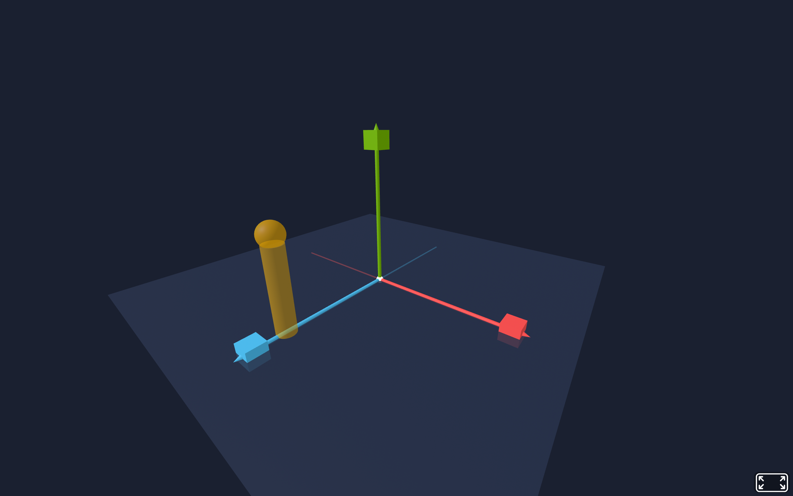
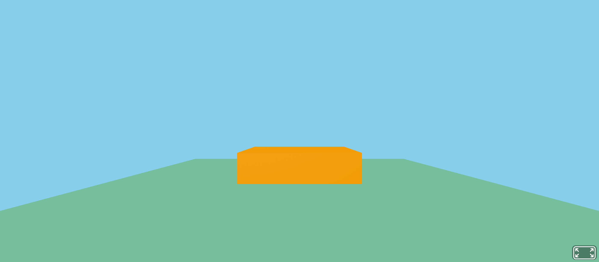
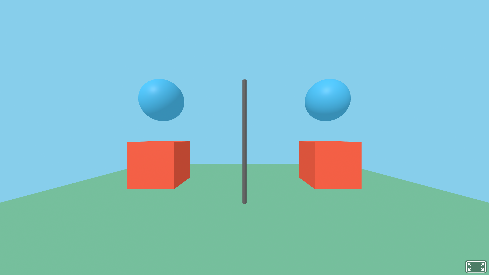
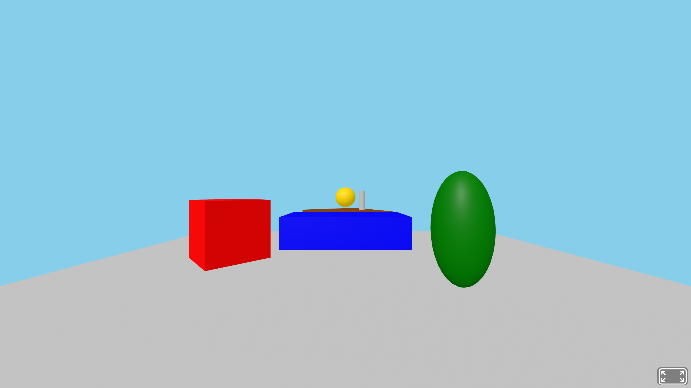

A-Frame導入、エンティティ、コンポーネント、座標系、基本ジオメトリ
この回は 「理想の大学教室を作る」 という1つのクリエイティブ課題に集中します。
知識確認は「例題」「トレース演習」「コード体験」の中で行い、最後の標準課題で学んだ ECS・ネスト・rotation・scale をすべて使って自分の作品に仕上げてください。
第1回では A-Frame の基本タグ（<a-box> など）で3D空間を作りました。
今回はその裏側にあるエンティティ・コンポーネント・システム（ECS）というアーキテクチャを理解し、より柔軟な3D表現の土台を作ります。
A-Frame はECS（Entity-Component-System）というアーキテクチャを採用しています。
| 用語 | 役割 | A-Frameでの対応 |
|---|---|---|
| Entity（エンティティ） | 「モノ」の入れ物。それ自体は何の見た目も動作も持たない。 | <a-entity> タグ |
| Component（コンポーネント） | エンティティに追加する「機能パーツ」。見た目・位置・動きなどを1つずつ定義する。 | HTML属性（geometry, material, position など） |
| System（システム） | コンポーネントをまとめて処理するエンジン。開発者が直接触ることは少ない。 | A-Frameの内部処理（描画ループ等） |
ECS の最大の利点は組み合わせの自由度です。geometry を変えれば形が変わり、material を変えれば見た目が変わり、animation を付ければ動く ―― すべて独立したパーツとしてエンティティに付け外しできます。
<a-entity> 課題に出ます<a-entity> は A-Frame の汎用要素です。単体では何も表示されませんが、コンポーネント（属性）を追加することで3Dオブジェクトになります。
HTML <!-- 何も表示されない（コンポーネントがないため）--> <a-entity></a-entity> <!-- geometry + material を追加すると赤い箱になる --> <a-entity geometry="primitive: box" material="color: red" position="0 1 -3"></a-entity>
<a-entity> だけ書いても何も見えない ―― コンポーネントが「見た目」を決める属性名="プロパティ: 値" の形式で書く; で区切る: geometry="primitive: box; width: 2; height: 0.5"エンティティに追加できる代表的なコンポーネントを見てみましょう。
| コンポーネント | 役割 | 記述例 |
|---|---|---|
| geometry | 形を決める（箱、球、円柱…） | geometry="primitive: box; width: 2" |
| material | 見た目を決める（色、透明度…） | material="color: red; opacity: 0.8" |
| position | 位置を決める（x, y, z） | position="0 1 -3" |
| rotation | 回転を決める（度数法） | rotation="0 45 0" |
| scale | 拡大縮小を決める | scale="2 1 0.5" |
これらはすべて独立したコンポーネントです。必要なものだけ組み合わせてエンティティに付けられます。
A-Frame は右手座標系を使います。単位はメートルです。
📺 実行画面（実機キャプチャ）── A-Frame で3軸を可視化したシーン

(0, 1.6, 0)
補助の概念図（軸の関係を平面で見る）:
| 軸 | 方向 | プラスの向き |
|---|---|---|
| X 軸 | 左右 | 右がプラス |
| Y 軸 | 上下 | 上がプラス |
| Z 軸 | 手前奥 | 手前がプラス（カメラに向かってくる方向） |
カメラのデフォルト位置は (0, 1.6, 0) です（立っている人の目の高さ約1.6m）。Z がマイナスの方向が「カメラの正面（奥）」になるため、オブジェクトを見えるようにするにはZ をマイナスにします。
<a-scene> の中にカメラ・3Dオブジェクト・ライト・背景がすべて配置される。各 Entity にはコンポーネント（geometry, material, position 等）が付与される。
第1回で使った <a-box> や <a-sphere> はプリミティブと呼ばれ、エンティティ + コンポーネントのショートカット（省略記法）です。
| プリミティブ記法（ショートカット） | エンティティ・コンポーネント記法（正式） |
|---|---|
<a-box position="0 1 -3" color="red"> |
<a-entity geometry="primitive: box" material="color: red" position="0 1 -3"> |
<a-sphere position="0 2 -5" radius="1.5" color="blue"> |
<a-entity geometry="primitive: sphere; radius: 1.5" material="color: blue" position="0 2 -5"> |
<a-cylinder position="1 0.5 -3" radius="0.5" height="1" color="yellow"> |
<a-entity geometry="primitive: cylinder; radius: 0.5; height: 1" material="color: yellow" position="1 0.5 -3"> |
どちらの書き方でも結果はまったく同じです。プリミティブは短くて読みやすく、エンティティ・コンポーネント記法は細かい制御やカスタムコンポーネントの追加に便利です。
rotation は度数法（degree）で X軸、Y軸、Z軸 の回転角度を指定します。
| 記述例 | 動き |
|---|---|
rotation="45 0 0" | X軸を中心に45度回転（前方向にお辞儀） |
rotation="0 90 0" | Y軸を中心に90度回転（横を向く） |
rotation="0 0 30" | Z軸を中心に30度回転（時計の針のように傾く） |
rotation="-90 0 0" | X軸を中心に-90度回転（平面を床にする定番パターン） |
第1回で <a-plane rotation="-90 0 0"> と書いて床を作りました。これはデフォルトで垂直に立っている平面を、X軸を中心に-90度回転させて水平に倒す操作です。
scale は X軸、Y軸、Z軸 の拡大率を指定します。デフォルトは "1 1 1"（等倍）です。
| 記述例 | 効果 |
|---|---|
scale="1 1 1" | 元のサイズ（デフォルト） |
scale="2 2 2" | 全方向に2倍（大きくなる） |
scale="0.5 0.5 0.5" | 全方向に半分（小さくなる） |
scale="1 3 1" | Y軸方向のみ3倍（縦長に引き延ばし） |
scale="2 0.5 1" | 横に2倍、縦に半分（平たくなる） |
注意: scale は geometry のサイズ指定（width, height）とは異なります。geometry はオブジェクト自体の形状を定義し、scale はそのオブジェクト全体を変形させます。子エンティティがある場合、scale は子にも影響します。
以下の2つのコードはまったく同じ結果を表示します。対応関係を確認しましょう。
HTML ── プリミティブ記法 <a-box position="0 1 -3" width="2" height="0.5" depth="1" color="orange"></a-box>
HTML ── エンティティ・コンポーネント記法 <a-entity geometry="primitive: box; width: 2; height: 0.5; depth: 1" material="color: orange" position="0 1 -3"></a-entity>
| プリミティブの属性 | エンティティの対応コンポーネント |
|---|---|
width="2" height="0.5" depth="1" | geometry="primitive: box; width: 2; height: 0.5; depth: 1" |
color="orange" | material="color: orange" |
position="0 1 -3" | position="0 1 -3"（同じ） |
color 属性は、内部的には material コンポーネントの color プロパティに変換されるwidth, height, depth は geometry コンポーネントのプロパティになるposition はどちらの記法でも同じ書き方📺 実行画面（実機キャプチャ・どちらの記法でも同じ結果）

width:2 / height:0.5 / depth:1 なので横長で薄い箱に見える。プリミティブで書いてもエンティティで書いても表示は同じ。🖐 やってみよう（1分）
<a-sphere radius="1" color="blue"> をエンティティ・コンポーネント記法に頭の中で変換してみよう。
問題: 以下のプリミティブ記法を、エンティティ・コンポーネント記法に書き換えなさい。
HTML ── 変換前（プリミティブ） <a-sphere position="2 1.5 -4" radius="0.8" color="#FF6347"></a-sphere> <a-cylinder position="-1 1 -5" radius="0.3" height="2" color="green"></a-cylinder> <a-plane position="0 0 -4" rotation="-90 0 0" width="8" height="8" color="#CCC"></a-plane>
変換後のエンティティ・コンポーネント記法を以下の形式で記入してください。
HTML ── 変換後（エンティティ・コンポーネント）── 空欄を埋める <!-- 球 --> <a-entity geometry="______________________" material="______________________" position="______________________"></a-entity> <!-- 円柱 --> <a-entity geometry="______________________" material="______________________" position="______________________"></a-entity> <!-- 床 --> <a-entity geometry="______________________" material="______________________" position="______________________" rotation="______________________"></a-entity>
問題: 以下のコードで、各エンティティがどのように表示されるかを予測し、表を埋めなさい。
HTML <a-scene> <!-- A --> <a-entity geometry="primitive: box" material="color: red" position="-2 1 -4" rotation="0 45 0"></a-entity> <!-- B --> <a-entity geometry="primitive: box" material="color: blue" position="0 1 -4" scale="2 0.5 1"></a-entity> <!-- C --> <a-entity geometry="primitive: sphere; radius: 0.5" material="color: green" position="2 1 -4" scale="1 2 1"></a-entity> <a-entity geometry="primitive: plane; width: 10; height: 10" material="color: #CCC" position="0 0 -4" rotation="-90 0 0"></a-entity> <a-sky color="#87CEEB"></a-sky> </a-scene>
| ラベル | 形 | 色 | 見え方の予測（rotationやscaleの影響） |
|---|---|---|---|
| A | |||
| B | |||
| C |
第3回と同じ流れで、Node.js + Express で簡易Webサーバを立ち上げ、public/ フォルダに置いたHTMLをブラウザから読み込みます。コード体験1〜2と標準課題で作る3つのHTMLは、すべて public/ の中に置き、1つの server.js が http://localhost:3000/ファイル名.html として配信します。
3つのコード体験・標準課題は同じ Web04 フォルダ・同じ server.js を使い回します。この準備は最初に1回だけ行えばOKです。
Web_Prog の中に Web04 フォルダを作成するS:\Web_Prog\Web04 を開くTerminal
node -v
v20.x.x や v22.x.x のように表示されればOKです。古いバージョン（例: v5.x）の場合は、第2回の資料を見て公式サイトから LTS版 を再インストールしてください。
Terminal
npm init -y
npm install express@4
npm init -y で package.json が生成され、npm install express@4 で Express（v4 系）がインストールされます。第3回と同じ流れです。node_modules フォルダと package-lock.json が自動で作られますが、手動で編集する必要はありません。
express@4？v5.x）でも動かせるよう、安定版の v4 系を使います。npm install express（バージョン指定なし）だと最新の v5 が入ってしまうため、必ず @4 を付けてください。
次に、public フォルダと server.js を作ります。
public フォルダを作成（HTMLファイルはすべてこの中に置きます）Web04 直下（public の外）で 「新しいファイル」アイコン → ファイル名を server.js と入力JavaScript ── server.js const express = require('express'); // Express ライブラリを読み込む const app = express(); // Express アプリケーションを作成する // public フォルダの中身を、そのままブラウザに配信する // 例: public/compare.html → http://localhost:3000/compare.html app.use(express.static('public')); app.listen(3000, function() { // ポート3000でサーバを起動する console.log('サーバ起動: http://localhost:3000'); });
app.use(express.static('public')) の1行で、public/ に置いたHTML・CSS・画像などをそのままブラウザから読み込めるようになります。今回のサーバはこれだけ ── 第3回のように app.get('/api/...') のJSON APIは書きません。
サーバを起動する:
node server.js を実行サーバ起動: http://localhost:3000 と表示されればOKserver.js は静的ファイル配信だけなので、HTMLを書き換えてもサーバの再起動は不要。public/ 内のファイルを保存してブラウザを再読み込みするだけで反映されます。ポート3000が使用中（EADDRINUSE）のエラーが出た場合は、第2回・第3回資料の対処法を参照してください。
compare.html上の「準備」で作った public フォルダの中に、HTMLファイルを作成します。
public フォルダを選択した状態で 「新しいファイル」アイコンをクリック（public の中に作成されることを確認）compare.html と入力して EnterHTML ── public/compare.html <!DOCTYPE html> <html lang="ja"> <head> <meta charset="UTF-8"> <title>Primitive vs Entity-Component</title> <script src="https://aframe.io/releases/1.7.1/aframe.min.js"></script> </head> <body> <a-scene> <!-- 左側: プリミティブ記法 --> <a-box position="-2 1 -4" color="#FF6347"></a-box> <a-sphere position="-2 2.5 -4" radius="0.5" color="#4FC3F7"></a-sphere> <!-- 右側: エンティティ・コンポーネント記法（同じ結果） --> <a-entity geometry="primitive: box" material="color: #FF6347" position="2 1 -4"></a-entity> <a-entity geometry="primitive: sphere; radius: 0.5" material="color: #4FC3F7" position="2 2.5 -4"></a-entity> <!-- 中央のラベル代わりの柱 --> <a-entity geometry="primitive: cylinder; radius: 0.05; height: 3" material="color: #666" position="0 1.5 -4"></a-entity> <!-- 床 --> <a-entity geometry="primitive: plane; width: 12; height: 12" material="color: #7BC8A4" position="0 0 -4" rotation="-90 0 0"></a-entity> <a-sky color="#87CEEB"></a-sky> </a-scene> </body> </html>
実行手順:
node server.js を実行（サーバが既に起動中ならスキップ）http://localhost:3000/compare.html を開く📺 実行画面（実機キャプチャ）

<a-box> タグをクリックして確認すると、内部的にどのような属性が付いているか？🖐 やってみよう（1分）
右側のエンティティ・コンポーネント記法の箱に scale="2 1 1" を追加して保存し、プリミティブ側との見た目の違いを確認しよう。
transform.html同じ public フォルダにもう1つファイルを作ります（server.js は作り直さなくてOK ── すでに public/ 全体を配信しています）。
public フォルダを選択した状態で 「新しいファイル」アイコンをクリックtransform.html と入力して EnterHTML ── public/transform.html <!DOCTYPE html> <html lang="ja"> <head> <meta charset="UTF-8"> <title>Rotation, Scale & Nesting</title> <script src="https://aframe.io/releases/1.7.1/aframe.min.js"></script> </head> <body> <a-scene> <!-- A: 45度回転した赤い箱 --> <a-entity geometry="primitive: box" material="color: red" position="-2 1 -4" rotation="0 45 0"></a-entity> <!-- B: 横に潰れた青い箱 --> <a-entity geometry="primitive: box" material="color: blue" position="0 1 -4" scale="2 0.5 1"></a-entity> <!-- C: 縦長の緑の球 --> <a-entity geometry="primitive: sphere; radius: 0.5" material="color: green" position="2 1 -4" scale="1 2 1"></a-entity> <!-- D: ネストされたエンティティ（親子関係） --> <a-entity position="0 1 -7" rotation="0 30 0"> <!-- 親エンティティの中に子を配置 --> <a-entity geometry="primitive: box; width: 2; height: 0.2; depth: 2" material="color: #8B4513" position="0 0 0"></a-entity> <a-entity geometry="primitive: sphere; radius: 0.3" material="color: #FFD700" position="0 0.5 0"></a-entity> <a-entity geometry="primitive: cylinder; radius: 0.1; height: 0.6" material="color: #C0C0C0" position="0.6 0.4 0"></a-entity> </a-entity> <!-- 床 --> <a-entity geometry="primitive: plane; width: 12; height: 12" material="color: #CCC" position="0 0 -4" rotation="-90 0 0"></a-entity> <a-sky color="#87CEEB"></a-sky> </a-scene> </body> </html>
実行手順: サーバが起動中なら、ブラウザで http://localhost:3000/transform.html を開くだけ。サーバが止まっていたら、ターミナルで node server.js を実行してから開く。
📺 実行画面（実機キャプチャ）

🖐 やってみよう（1分）
D（ネストされたエンティティ）の親に scale="2 2 2" を追加して保存し、子エンティティ全体がどう変化するか確認しよう。
VS Code で Web04/public フォルダの中に classroom.html を新規作成し（エクスプローラで public を選択 → 「新しいファイル」アイコン → ファイル名入力）、エンティティ・コンポーネント記法であなたが理想とする大学の教室を作ってください。
ありきたりな教室ではなく ―― 「こんな教室で授業を受けたい！」と思える空間にしてください（例: 円形階段教室、屋外テラス付き教室、カフェ風ゼミ室、未来的なVR教室、自然光があふれる学習ラウンジ など）。
この回はこの1課題に集中します。例題・トレース演習・コード体験で身につけた ECS／ネスト／rotation／scale を、自分の作品の中ですべて使いましょう。
確認方法: コード体験で起動した server.js が動いていれば、ブラウザで http://localhost:3000/classroom.html を開くだけ（保存後に再読み込み）。サーバが止まっていたら、ターミナルで node server.js を実行してから開く。
必須要件
<a-entity>）で書く（プリミティブ不可）rotation と scale をそれぞれ1か所以上使う提出要件
| 提出物 | 内容 |
|---|---|
| コード | classroom.html のコード全体をNotionノートに貼り付ける |
作品づくりに集中してください。完成した classroom.html のコードのみで提出完了です。
机を1つのネストにしておけば、教室に並べるときは 親エンティティの position を変えるだけでよくなります。
<!-- 学生用デスク（天板 + 脚4本）── これ全体が「机」エンティティ --> <a-entity position="-1.5 0 -3"> <!-- 天板 --> <a-entity geometry="primitive: box; width: 1.2; height: 0.06; depth: 0.6" material="color: #C9A26B" position="0 0.72 0"></a-entity> <!-- 脚4本 --> <a-entity geometry="primitive: cylinder; radius: 0.03; height: 0.72" material="color: #555" position="-0.55 0.36 0.25"></a-entity> <a-entity geometry="primitive: cylinder; radius: 0.03; height: 0.72" material="color: #555" position=" 0.55 0.36 0.25"></a-entity> <a-entity geometry="primitive: cylinder; radius: 0.03; height: 0.72" material="color: #555" position="-0.55 0.36 -0.25"></a-entity> <a-entity geometry="primitive: cylinder; radius: 0.03; height: 0.72" material="color: #555" position=" 0.55 0.36 -0.25"></a-entity> </a-entity> <!-- 同じ机を 1.5m 右にもう1台並べる ―― 親 position を変えるだけ --> <a-entity position="0 0 -3"> ... 同じ中身 ... </a-entity>
<!-- 教壇正面の黒板（壁に貼り付ける薄い板＋枠） --> <a-entity position="0 1.5 -5"> <!-- 黒板本体（暗い緑） --> <a-entity geometry="primitive: box; width: 3; height: 1.2; depth: 0.05" material="color: #1F3D2B" position="0 0 0"></a-entity> <!-- 枠（少し大きめの板を後ろに置く） --> <a-entity geometry="primitive: box; width: 3.2; height: 1.4; depth: 0.04" material="color: #6B4226" position="0 0 -0.03"></a-entity> </a-entity>
<!-- 学生用の椅子（座面 + 背もたれ + 脚4本） --> <a-entity position="-1.5 0 -2.2"> <!-- 座面 --> <a-entity geometry="primitive: box; width: 0.45; height: 0.05; depth: 0.45" material="color: #4A6FA5" position="0 0.45 0"></a-entity> <!-- 背もたれ --> <a-entity geometry="primitive: box; width: 0.45; height: 0.5; depth: 0.05" material="color: #4A6FA5" position="0 0.75 -0.2"></a-entity> <!-- 脚（簡略化のため2本にしてもOK） --> <a-entity geometry="primitive: cylinder; radius: 0.025; height: 0.45" material="color: #333" position="-0.18 0.22 0.18"></a-entity> <a-entity geometry="primitive: cylinder; radius: 0.025; height: 0.45" material="color: #333" position=" 0.18 0.22 0.18"></a-entity> <a-entity geometry="primitive: cylinder; radius: 0.025; height: 0.45" material="color: #333" position="-0.18 0.22 -0.18"></a-entity> <a-entity geometry="primitive: cylinder; radius: 0.025; height: 0.45" material="color: #333" position=" 0.18 0.22 -0.18"></a-entity> </a-entity>
各セクションを埋めていってください。これが提出するPDFの元になります。
Notion テンプレート
# Webプログラミング演習 第4回
名前:
学籍番号:
---
## 例題: プリミティブとエンティティ・コンポーネント記法の対応
### やってみよう（<a-sphere radius="1" color="blue"> をエンティティ・コンポーネント記法に変換）
（変換後のコードを1行で書く）
---
## トレース演習 1: プリミティブをエンティティ記法に変換する
```html
<!-- 球 -->
<a-entity
geometry="______________________"
material="______________________"
position="______________________"></a-entity>
<!-- 円柱 -->
<a-entity
geometry="______________________"
material="______________________"
position="______________________"></a-entity>
<!-- 床 -->
<a-entity
geometry="______________________"
material="______________________"
position="______________________"
rotation="______________________"></a-entity>
```
---
## トレース演習 2: rotation と scale の効果を予測する
| ラベル | 形 | 色 | 見え方の予測（rotationやscaleの影響） |
|---|---|---|---|
| A | | | |
| B | | | |
| C | | | |
---
## コード体験 1: プリミティブ vs エンティティ・コンポーネント（compare.html）
### Q1. 左側（プリミティブ）と右側（エンティティ・コンポーネント）の表示結果の違い
### Q2. 開発者ツール（F12 → Elements）で <a-box> に内部的に付いている属性
### やってみよう（右側の箱に scale="2 1 1" を追加した後の見た目の変化）
---
## コード体験 2: rotation・scale・ネスト（transform.html）
### Q1. トレース演習2の予測と実際の表示の比較（違った点）
### Q2. D（ネストされたエンティティ）は何に見えるか / 親の rotation を "0 0 0" に変えるとどう変わるか
### Q3. B の scale="2 0.5 1" を "1 1 1" に戻したときの変化
### やってみよう（親に scale="2 2 2" を追加したとき、子エンティティ全体への影響）
---
## 標準課題: 理想の大学教室を作る（クリエイティブ課題）
### コード（classroom.html 全体）
```html
（ここに貼り付け）
```
<!-- 球 --> <a-entity geometry="primitive: sphere; radius: 0.8" material="color: #FF6347" position="2 1.5 -4"></a-entity> <!-- 円柱 --> <a-entity geometry="primitive: cylinder; radius: 0.3; height: 2" material="color: green" position="-1 1 -5"></a-entity> <!-- 床 --> <a-entity geometry="primitive: plane; width: 8; height: 8" material="color: #CCC" position="0 0 -4" rotation="-90 0 0"></a-entity>
radius, height, width は geometry コンポーネントのプロパティになるcolor は material コンポーネントの color プロパティになるposition と rotation はそのまま独立したコンポーネントとして記述する| ラベル | 形 | 色 | 見え方の予測 |
|---|---|---|---|
| A | 箱 | 赤 | Y軸を中心に45度回転しているため、箱の角がカメラ正面を向く（ダイヤモンドのように見える） |
| B | 箱 | 青 | X方向に2倍、Y方向に0.5倍なので、横に広く縦に潰れた平たい箱になる |
| C | 球 | 緑 | Y方向に2倍に引き延ばされた楕円体（卵形）になる |
<a-box> を確認すると、内部的に geometry, material, position などのコンポーネント属性が自動的に付与されていた。プリミティブは内部でエンティティ・コンポーネントに変換されていることがわかる。
※ 標準課題（理想の大学教室）はクリエイティブ課題のため、固定解答はありません。
ヒントは「標準課題」セクション内の「学生用デスク／黒板／椅子の作り方」を参照してください。